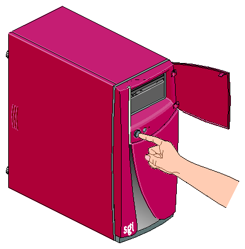

Práctica Sesión 1
Encender el ordenador

Desde tu puesto de trabajo, identifica la torre de tu equipo y
enciende el ordenador pulsando el botón de encendido.
- Observa los estados por los que pasa la fase de arranque
del equipo.
- Cuando veas un menú para elegir el tipo de arranque,
selecciona la primera opción pulsando la tecla
Intro.
- ¿Cuánto tarda hasta que nos saca la pantalla de entrada a
Windows 7?
El usuario/contraseña de la UJI
Verás que una vez terminado el proceso de arranque, no puedes
todavía acceder al ordenador, ya que nos solicitan que nos
validemos con el usuario de la UJI. Vamos a dedicar a este proceso
un rato hasta que lo consigamos.
- Pulsa la combinación de teclas Ctrl + Alt +
Supr para que nos aparezca la ventana de
introducción de credenciales.
- Introduce tu usuario alXXXXXX y tu
contraseña en los campos correspondientes.
- Selecciona como dominio SG que es el grupo
de alumnos
- Si todo ha ido bien, cuando pulses Aceptar
entrarás a la pantalla principal de Windows
7.
Ejercicio introductorio a Windows 7
Quiero que veáis que las diferencias entre sistemas operativos son fácilmente asumibles, así que vamos a realizar un ejercicio de los que ya estábamos acostrumbrados/as a realizar.
- Abre un navegador. Recuerda que puedes utilizar Google Chrome, Mozilla Firefox, o Internet Explorer. Yo recomiendo siempre Chrome o Firefox, pero eso va a gusto de cada uno.
- Accede al correo de la universidad y busca un e-mail mío. Os acabo de mandar un correo, donde os solicito que me busquéis y enviéis por correo una información.
- El acceso al correo de la universidad lo puedes realizar a través de esta dirección: http://gmail.uji.es
Apagar el equipo
Una vez finalicemos la sesión, vamos a apagar el equipo, para
ello tenemos 2 maneras principales.
- La más sencilla sería pulsar y soltar el botón de
encendido, y el ordenador iniciará el proceso de parada
directamente.
- También podemos hacerlo yendo al menú de inicio de Windows
con el ratón y buscando la opción Apagar.